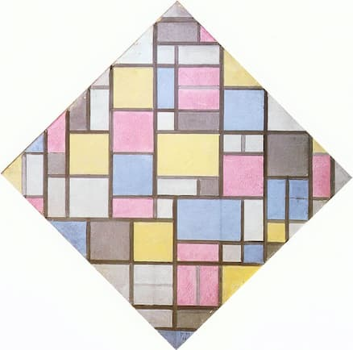
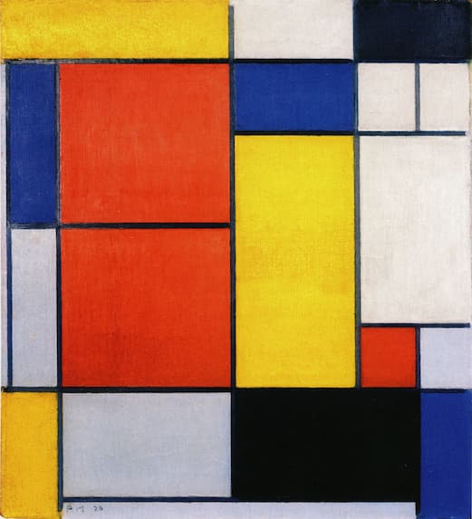
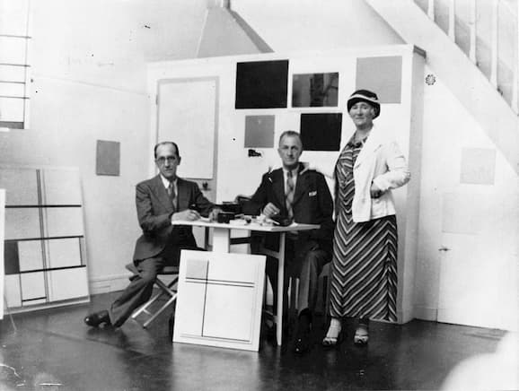

By the time Mondrian left the Netherlands and returned to Paris, he had already started formulating the style of painting for which he became known.
Piet Mondrian (1918), Composition with Color Planes and Gray Lines
Since 1911, Mondrian had been experimenting with grid-like compositions marked by black lines.

Piet Mondrian (1919), Composition with Grid VII
Following the dictates of his Neo-Plasticist style, he included rectangles of white, black, grey, red, yellow or blue.
Piet Mondrian (1920), Composition no. II
Curved lines had long disappeared.
Shapes did not overlap, thus emphasizing flatness.
This simple and austere aesthetic became the focus of Mondrian's work for roughly two decades.

Piet Mondrian (1920), Composition II
But although Mondrian had worked out the basic formula for his “mature style” by 1918, it wasn't until 1921 that the style fully emerged.
Between 1918 and 1921, Mondrian increasingly minimalized his compositions, until he arrived at a more spacious compositional approach that was less grid-like, and more concerned with contrasting and juxtaposing colors and shapes.
Piet Mondrian (1921), Tableau I
It was in minimalism, simplicity and space that Mondrian finally arrived at his “spiritual aesthetic”.
Piet Mondrian (1930), Composition with Yellow Patch
Mondrian's mature style also emphasized asymmetry, and diagonal movement.
Piet Mondrian (1932), Composition with Yellow and Blue
He achieved diagonal movement by hanging canvases diagonally...
Piet Mondrian (1925), Tableau N. 1, Lozenge with Three Lines, Blue, Gray and Yellow
...but also by how he places his shapes, lines and colors, creating tension by emphasizing different sizes and positions.
Piet Mondrian (1930), Composition with Red, Blue and Yellow
This is key to the success of Mondrian's mature style, in that it balances symmetry, simplicity, harmony and minimalism with asymmetry, tension and contrast.
In was in this balanced tension that Mondrian found his “spiritual synthesis”, a style worthy of his spiritual convinctions.
Mondrian's mature style, at it's best, captures a sense of quiet beauty and elegance.
Piet Mondrian (1936), Vertical Composition with Blue and White
There is a sense that the space of the canvas stretches infinitely, in a weightless, un-moving world, perfectly tranquil, sublime in it's subtlety.
Piet Mondrian (1931), Lozenge with Two Lines
Mondrian's greater aesthetic vision is also uncovered by understanding his evolving relationship to his studio space in Paris.
Mondrian became increasingly concerned with organizing his studio space so as to create the right atmosphere for his work.
His studio became an unofficial gallery as he carefully arranged his paintings to create an immersive art space.
Mondrian in his Paris studio
By many accounts, entering Mondrian's studio was quite a unique experience.
A contemporary recreation of Mondrian's Paris studio.
What this shows is that we can also understand Mondrian's paintings by contrasting them to each other and considering how they can work together to create an emergent, installation-like aesthetic.
Mondrian pursued his mature style within a fairly narrow range for much of the rest of his life, and it had quite a wide impact on painting and design, as Mondrian became a symbol of reductive minimalist geometrical abstraction, not to mention modernist aesthetic ideals in general.
Piet Mondrian (1932), Composition with Double Line and Yellow
Piet Mondrian (1929), Composition No. III, with Red, Blue, Yellow and Black
Piet Mondrian (1932), Composition with Blue and Yellow
Piet Mondrian (1933), Composition with Red and Blue
Mondrian became an archetypical modernist, convinced that painting had a “final aesthetic” in which all aspects of traditional aesthetics were stripped away.
And while Mondrian might not be a house-hold name, his style became famous enough that even people who do not know Piet Mondrian by name can recognize his signature style.

In Paris, Mondrian became a major avant-garde celebrity, and visiting his unusual studio was a sought-after experience.
Mondrian continued on his path of modernist orthodoxy into the 1930s, though his style starts to shift slightly in the early to mid-30s.
Mondrian starts moving away from minimalism somewhat, introducing more lines, and placing lines more tightly together, creating a more busy, tense, and intricate composition.
Piet Mondrian (1936), Composition with White, Red and Yellow A
While Mondrian's work in the 30s essentially adheres to his main formula, there's an increasing sense of action and energy, a moving away from tranquil balance.
Once again, and for the last time in his life, Mondrian's aesthetic was on the verge of transformation.